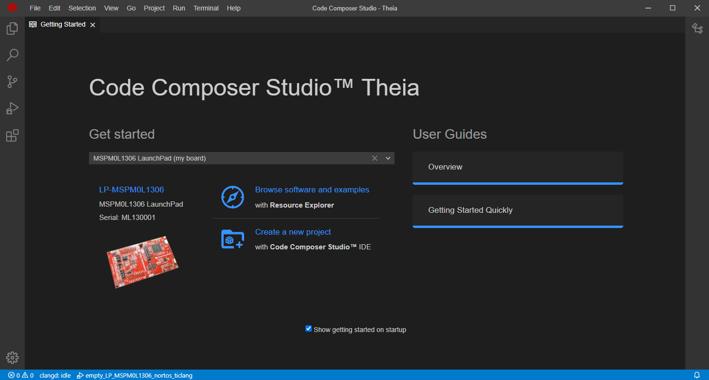
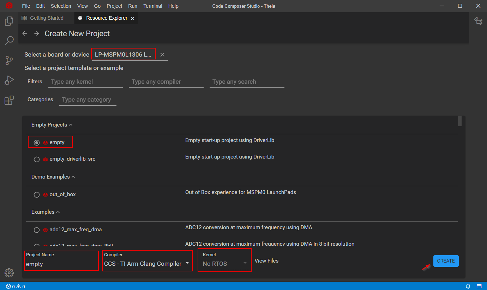
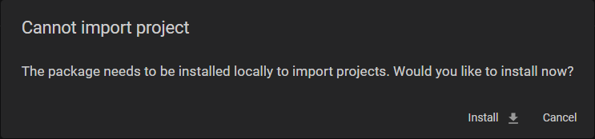
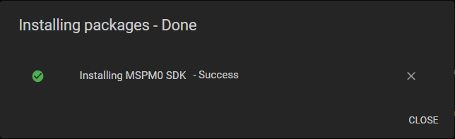

This guide is intended to assist users in the initial setup and demonstration of running their first MSPM0 application with CCS Theia.
This guide is not intended to explain the functionality of CCS Theia. Please refer to the documentation available through the Help menu in CCS Theia or the CCS Theia IDE Guide for MSPM0 MCUs included with the MSPM0 SDK documentation.
Open CCS Theia. The Getting Started page will show up, or it can be opened by selecting Help → Getting Started.
Note that CCS Theia will automatically detect a MSPM0 LaunchPad if connected.

Click on Create a new project with Code Composer Studio IDE to open the Project Wizard.
On the Project Wizard, select:
Device or Launchpad
Project to open, note that a brief description is provided and search filters can be used
Project name
Compiler, note that CCS Theia support TI Arm Clang and Arm GCC
RTOS or No-RTOS, if available for example

Click on Create.
If the MSPM0 SDK hasn’t been installed, CCS Theia will request to install it. Any other dependencies such as compilers can also be installed.

Close window once the SDK is installed.

The project will be imported into the workspace.
Optionally, open SysConfig.
Some examples in the MSPM0 SDK have SysConfig support. SysConfig is an intuitive and comprehensive collection of graphical utilities for configuring pins, peripherals, radios, subsystems, and other components. SysConfig helps you manage, expose, and resolve conflicts visually so that you have more time to create differentiated applications.
Simply double-click the .syscfg file in the project to open the SysConfig viewer and start exploring.